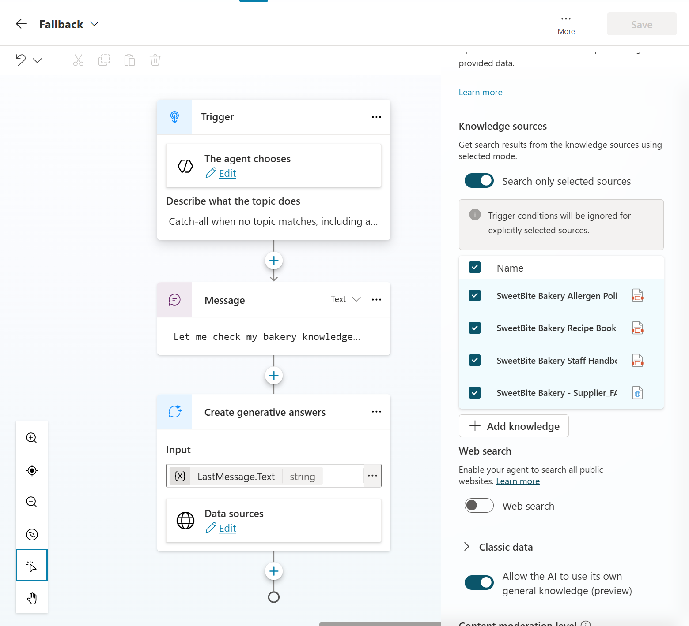
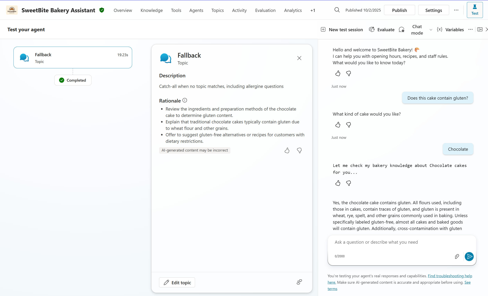

Lab 4 · ~30 minutes
Generative Orchestration: Blending Knowledge and Topics
Sometimes customers ask questions that don't fit your topics. With orchestration, the agent can fall back on knowledge sources while still reusing variables collected earlier in the conversation.
🥐 What you'll do
- Create a fallback topic
- Pass variables into a generative answer node
- Test orchestration with context
Step 1: Create a fallback topic with variable handoff
- Go to Topics → + Add a topic.
-
Fill in:
- Name: Fallback
- Description: Catch-all when no topic matches, including allergen questions.
-
Add a Message node:
- Insert variable → CakeType
Let me check my bakery knowledge about {CakeType} cakes for you... -
Add a Generative answers node:
- Click the + icon below the message node.
- Select Generative answers (Advanced).
-
Enable:
- ✅ Allow the AI to use its own General Knowledge
- ✅ All knowledge sources added earlier
-
In the instruction box enter:
Keep the answer short and precise
- Save the topic.
Expected result

Step 2: Test orchestration with variables
- Trigger Cake Order and choose Chocolate.
-
Ask:
Does this cake contain gluten?
-
Verify:
- The fallback topic is triggered.
- The CakeType variable is reused.
- The answer comes from the Allergen Policy PDF.
Expected result

🎯 Checkpoint
- ✅ Built fallback topic
- ✅ Inserted variable into orchestration handoff
- ✅ Tested orchestration using context and knowledge